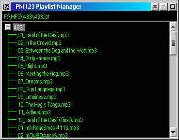

Playlist Manager is provided for browsing and managing playlists. Note that Playlist Manager is not a replacement for the playlist. You can add and remove lists from Playlist Manager, load lists into the normal playlist, load single files and calculate statistics. Also note that some of Playlist Manager's options only work with .LST playlists saved with PM123.

Playlist Manager will remember the playlist added to it next time you open it. Right click on an empty space (the title, for example) to get the main menu:
Right click on a playlist to get the list menu:
Right click on a file to get the file menu: